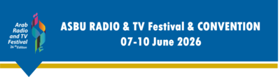
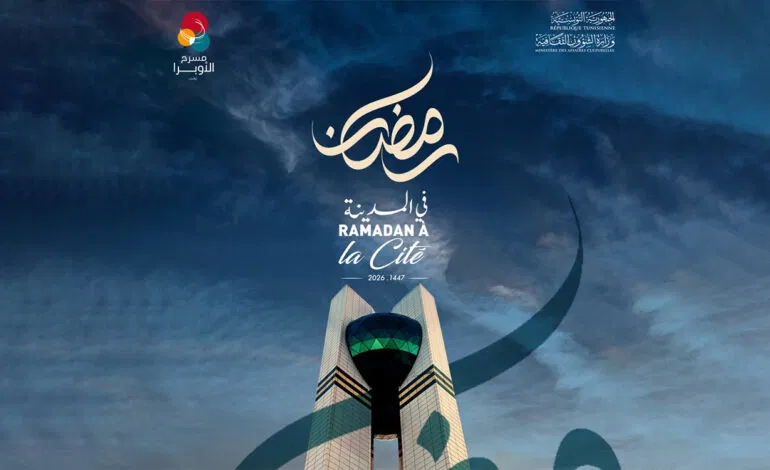
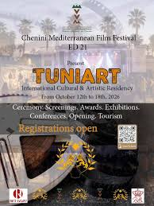

ASBU Radio & TV Festival & Convention

Date : 7 juin 2026 | Lieu : Hammamet
L’ASBU Radio & TV Festival & Convention est un événement culturel et professionnel majeur dans le monde des médias audiovisuels. Organisé chaque année sous l’égide de l’Arab States Broadcasting Union, ce festival rassemble des artistes, des professionnels de la radio, de la télévision et des médias numériques de toute la région arabe et au‑delà. Pendant plusieurs jours, Hammamet devient le centre d’un programme riche en conférences, ateliers spécialisés, projections et expositions interactives. Les participants ont l’occasion de découvrir les dernières innovations technologiques dans le secteur, d’échanger des idées sur les défis contemporains des médias, et d’assister à des compétitions de productions télévisuelles et radiophoniques.
Ramadan à la Cité – Festival culturel 2026

Date : 17 mars 2026 | Lieu : Cité de la culture à Tunis
Le festival culturel « Ramadan à la Cité 2026 » est un rendez‑vous artistique et culturel incontournable qui se déroule chaque année dans la majestueuse Cité de la Culture à Tunis durant le mois sacré du Ramadan. Cet événement célèbre les traditions, les arts et les valeurs humaines à travers un programme riche et diversifié, mêlant patrimoine, musique, spectacles, poésie, théâtre et arts visuels. Durant plusieurs semaines, la Cité de la Culture devient un lieu d’échanges et de partage, où les visiteurs peuvent assister à des concerts de musique traditionnelle et contemporaine, des récitals de poésie soufie, des pièces de théâtre inspirées par les cultures du monde, ainsi que des expositions artistiques mettant en valeur des artistes locaux et internationaux.
TUNIART

Date : 16 Octobre 2026 | Lieu : Chenini Gabès
TUNIART est une résidence artistique internationale qui met en lumière la créativité tunisienne et méditerranéenne sous toutes ses formes. Située au cœur du village historique de Chenini, dans la région de Gabès, cette résidence invite des artistes, cinéastes, plasticiens, musiciens et artisans à partager leurs visions et inspirations. Pendant toute la durée de l’événement, les participants explorent des thématiques culturelles profondes à travers des ateliers collaboratifs, des projections de films d’auteur, des performances en plein air et des discussions dirigées par des professionnels du monde artistique. L’ambiance y est conviviale et propice à l’échange, favorisant la rencontre entre artistes locaux et internationaux. Le festival se distingue par son engagement en faveur de l’expression créative et de la diversité culturelle, tout en valorisant le patrimoine architectural et humain du Sud tunisien.